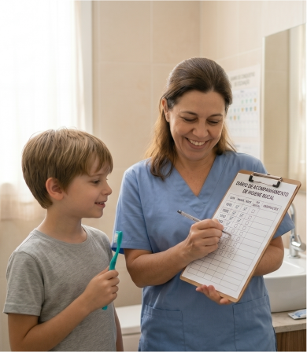

O uso de um checklist de monitoramento torna a higiene bucal mais organizada e previsível, facilitando a adaptação do indivíduo. O acompanhamento contínuo ajuda a observar a evolução, identificar dificuldades e escolher estratégias mais adequadas para cada necessidade.
Quando aplicado de forma consistente, esse recurso contribui para melhorar a aceitação da higiene bucal, reduzir comportamentos de resistência e fortalecer hábitos de cuidado oral ao longo do tempo.
A avaliação da adaptação à higiene bucal pode ser facilitada por meio da utilização de indicadores de progresso comportamental. Esses indicadores permitem observar a evolução do indivíduo em relação à tolerância aos estímulos orais, aceitação dos instrumentos de higiene e resposta comportamental durante o procedimento.
O acompanhamento desses parâmetros auxilia profissionais e cuidadores a identificar avanços no processo de adaptação e a ajustar estratégias de manejo conforme as necessidades individuais.
